Change analysis for Denmark for PRIMAP-hist v2.7_final compared to
v2.6.1_final
Overview over
emissions by sector and gas
The following figures show the aggregate national total emissions
excluding LULUCF AR6GWP100 for the country reported priority scenario.
The dotted linesshow the v2.6.1_final data.
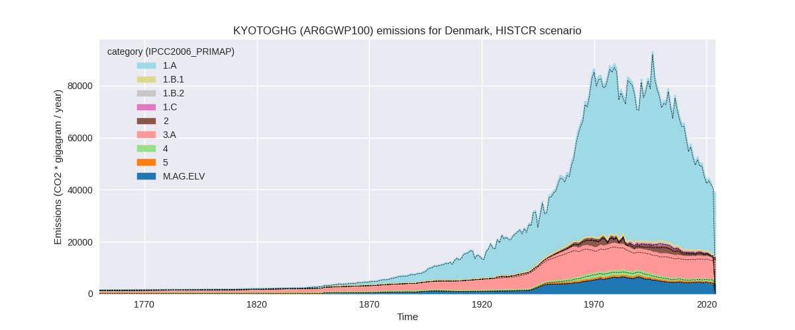
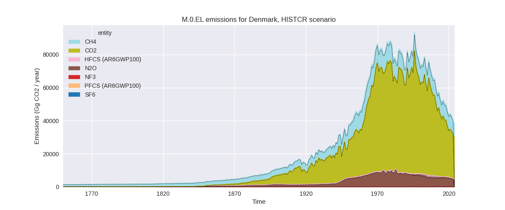
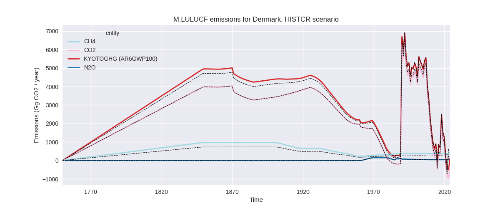
The following figures show the aggregate national total emissions
excluding LULUCF AR6GWP100 for the third party priority scenario. The
dotted linesshow the v2.6.1_final data.
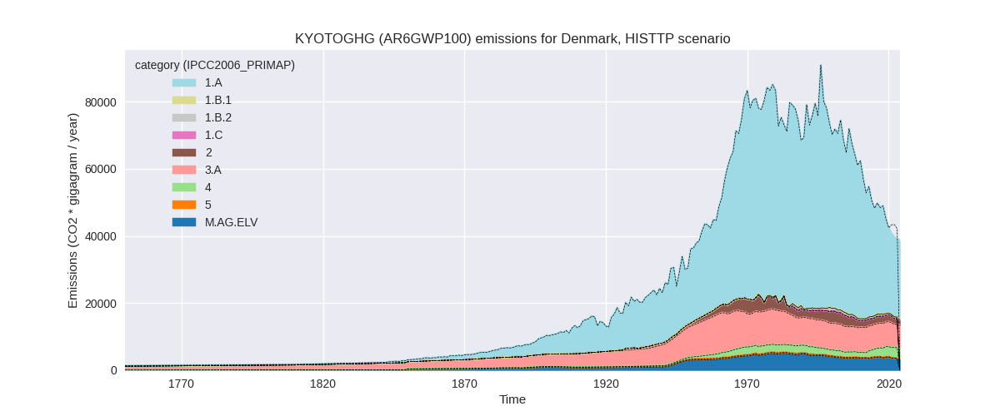
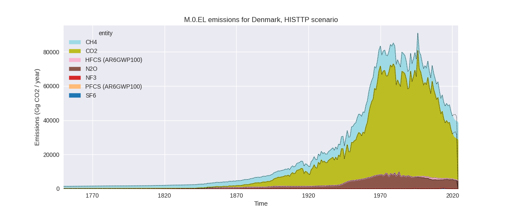
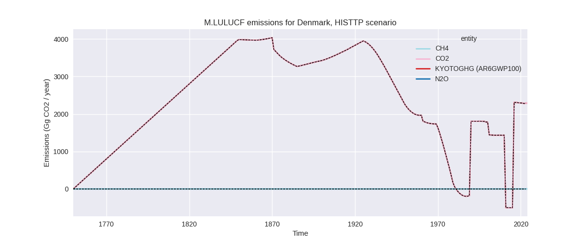
Overview over changes
In the country reported priority scenario we have the following
changes for aggregate Kyoto GHG and national total emissions excluding
LULUCF (M.0.EL):
- Emissions in 2023 have changed by -3.3%% (-1351.87 Gg CO2 / year)
- Emissions in 1990-2023 have changed by 1.6%% (1010.15 Gg CO2 / year)
In the third party priority scenario we have the following changes
for aggregate Kyoto GHG and national total emissions excluding LULUCF
(M.0.EL):
- Emissions in 2023 have changed by -7.0%% (-2946.07 Gg CO2 / year)
- Emissions in 1990-2023 have changed by -0.4%% (-274.83 Gg CO2 / year)
Most
important changes per scenario and time frame
In the country reported priority scenario the
following sector-gas combinations have the highest absolute impact on
national total KyotoGHG (AR6GWP100) emissions in 2023
(top 5):
- 1: 1.A, CO2 with -1203.59 Gg CO2 / year (-4.7%)
- 2: M.AG.ELV, N2O with -162.93 Gg CO2 / year (-4.3%)
- 3: 2, CO2 with -105.00 Gg CO2 / year (-8.0%)
- 4: 5, N2O with 86.67 Gg CO2 / year (inf%)
- 5: 3.A, CH4 with 80.22 Gg CO2 / year (1.1%)
In the country reported priority scenario the
following sector-gas combinations have the highest absolute impact on
national total KyotoGHG (AR6GWP100) emissions in
1990-2023 (top 5):
- 1: 3.A, CH4 with 684.94 Gg CO2 / year (9.4%)
- 2: 5, N2O with 201.66 Gg CO2 / year (inf%)
- 3: M.AG.ELV, N2O with 143.93 Gg CO2 / year (3.3%)
- 4: 1.A, CO2 with -40.41 Gg CO2 / year (-0.1%)
- 5: 4, CH4 with 38.20 Gg CO2 / year (3.5%)
In the third party priority scenario the following
sector-gas combinations have the highest absolute impact on national
total KyotoGHG (AR6GWP100) emissions in 2023 (top
5):
- 1: 1.A, CO2 with -2988.99 Gg CO2 / year (-11.7%)
- 2: 2, N2O with 43.07 Gg CO2 / year (60.6%)
- 3: 2, CH4 with -0.19 Gg CO2 / year (-6.3%)
- 4: 2, CO2 with 0.04 Gg CO2 / year (0.0%)
- 5: 1.A, CH4 with 0.00 Gg CO2 / year (0.0%)
In the third party priority scenario the following
sector-gas combinations have the highest absolute impact on national
total KyotoGHG (AR6GWP100) emissions in 1990-2023 (top
5):
- 1: 1.A, CO2 with -279.21 Gg CO2 / year (-0.6%)
- 2: 2, N2O with 4.38 Gg CO2 / year (1.0%)
- 3: 2, CH4 with -0.01 Gg CO2 / year (-0.2%)
- 4: 2, CO2 with 0.00 Gg CO2 / year (0.0%)
- 5: 1.A, CH4 with 0.00 Gg CO2 / year (0.0%)
Notes on data changes
Here we list notes explaining important emissions changes for the
country.
- Data from BTR1 has been replaced by data from the 2025 National
Inventory Submission. This leads to changes in several sectors and gases
which mainly affect total emission for 2023.
- The most prominent change for 2023 is in energy CO2 where CR data
has lower growth rates than 2024 EI data.
- N2O from M.AG.ELV is higher in the new CR data but lower in 2023
because of a decline from 2022 to 2023.
- CH4 from 3.A is higher for all years. The influence on 2023
emissions is small because of an emissions drop in 2023. the reason are
lower emissions factors for manure management.
- N2O in the “other” sector is now non-zero as it is no longer
reported as “not occurring” in the CR data and thus filled from
EDGAR.
- CO2 in the IPPU sector is lower for 2023 because of a decline in
emissions not modeled in third party data.
- The main change for the TP scenario is in energy CO2 where EI data
has been adjusted for recent years.
- N2O emissions in IPPU are impacted by the new CR data also for the
TP time-series, because the EDGAR time-series for chemical industry ends
in 2012. CH4 in 2.D has no third party data at all and is thus also
influenced by the new CR data.
Changes by sector and gas
For each scenario and time frame the changes are displayed for all
individual sectors and all individual gases. In the sector plot we use
aggregate Kyoto GHGs in AR6GWP100. In the gas plot we usenational total
emissions without LULUCF.
country reported scenario
2023
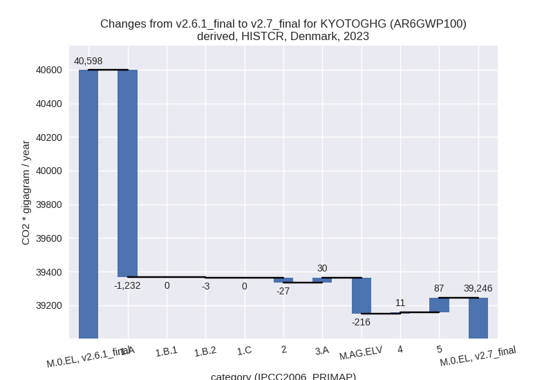
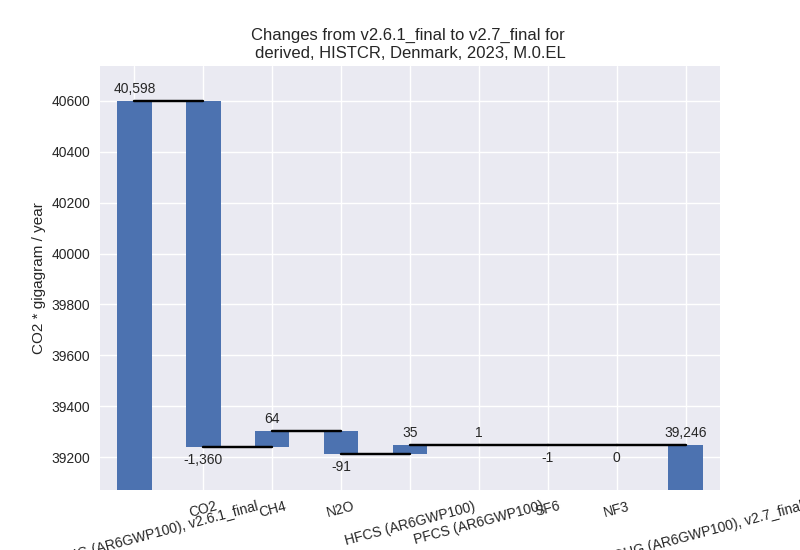
1990-2023
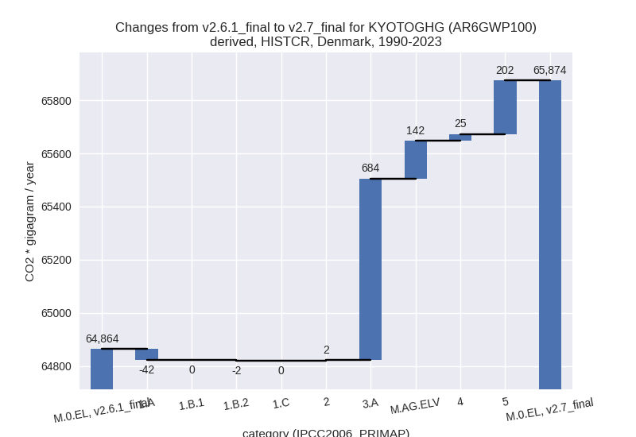
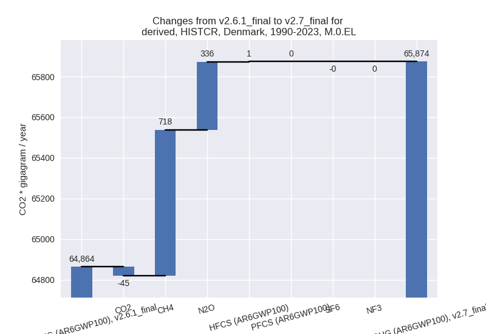
third party scenario
2023
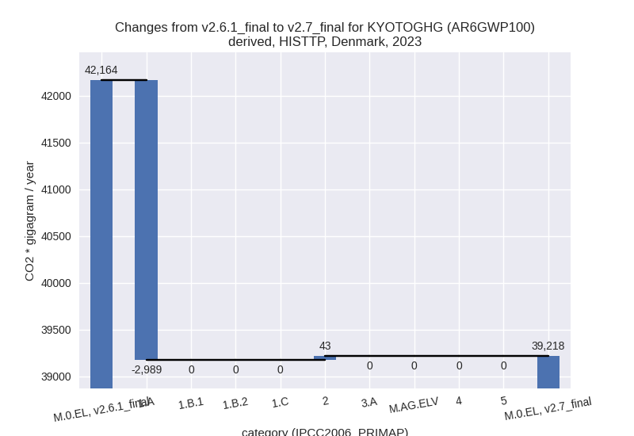
1990-2023
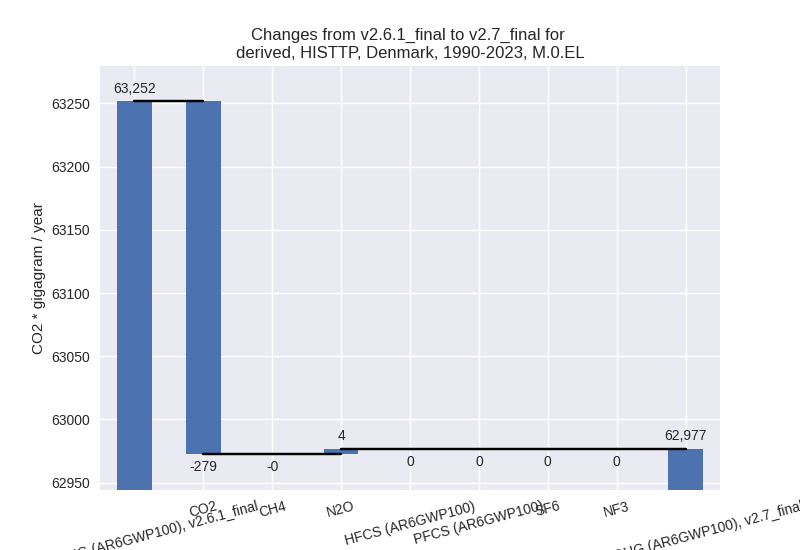
Detailed changes for the
scenarios:
country reported scenario
(HISTCR):
Most important changes
per time frame
For 2023 the following sector-gas combinations have
the highest absolute impact on national total KyotoGHG (AR6GWP100)
emissions in 2023 (top 5):
- 1: 1.A, CO2 with -1203.59 Gg CO2 / year (-4.7%)
- 2: M.AG.ELV, N2O with -162.93 Gg CO2 / year (-4.3%)
- 3: 2, CO2 with -105.00 Gg CO2 / year (-8.0%)
- 4: 5, N2O with 86.67 Gg CO2 / year (inf%)
- 5: 3.A, CH4 with 80.22 Gg CO2 / year (1.1%)
For 1990-2023 the following sector-gas combinations
have the highest absolute impact on national total KyotoGHG (AR6GWP100)
emissions in 1990-2023 (top 5):
- 1: 3.A, CH4 with 684.94 Gg CO2 / year (9.4%)
- 2: 5, N2O with 201.66 Gg CO2 / year (inf%)
- 3: M.AG.ELV, N2O with 143.93 Gg CO2 / year (3.3%)
- 4: 1.A, CO2 with -40.41 Gg CO2 / year (-0.1%)
- 5: 4, CH4 with 38.20 Gg CO2 / year (3.5%)
Changes in the main sectors for aggregate KyotoGHG (AR6GWP100)
are
- 1: Total sectoral emissions in 2022 are 27329.10 Gg
CO2 / year which is 63.9% of M.0.EL emissions. 2023 Emissions have
changed by -4.7% (-1234.89 Gg CO2 /
year). 1990-2023 Emissions have changed by -0.1% (-44.42 Gg CO2 / year). For 2023 the
changes per gas
are:
The changes come from the following subsectors:
- 1.A: Total sectoral emissions in 2022 are 27136.17
Gg CO2 / year which is 99.3% of category 1 emissions. 2023 Emissions
have changed by -4.7% (-1232.23 Gg
CO2 / year). 1990-2023 Emissions have changed by -0.1% (-42.05 Gg CO2 / year). For 2023 the
changes per gas
are:
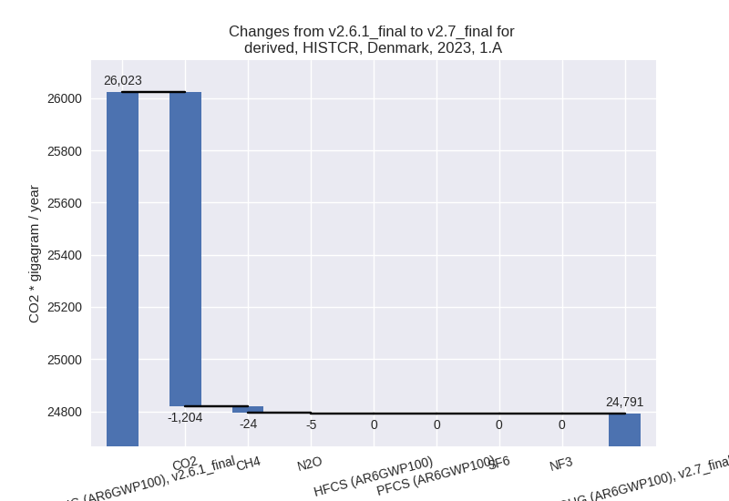
There is no subsector information available in PRIMAP-hist.
- 1.B.2: Total sectoral emissions in 2022 are 192.93
Gg CO2 / year which is 0.7% of category 1 emissions. 2023 Emissions have
changed by -1.4% (-2.65 Gg CO2 /
year). 1990-2023 Emissions have changed by -0.3% (-2.37 Gg CO2 / year).
- 2: Total sectoral emissions in 2022 are 1694.85 Gg
CO2 / year which is 4.0% of M.0.EL emissions. 2023 Emissions have
changed by -1.7% (-27.41 Gg CO2 /
year). 1990-2023 Emissions have changed by 0.1% (2.25 Gg CO2 / year).
- M.AG: Total sectoral emissions in 2022 are 12396.98
Gg CO2 / year which is 29.0% of M.0.EL emissions. 2023 Emissions have
changed by -1.6% (-186.79 Gg CO2 /
year). 1990-2023 Emissions have changed by 6.5% (825.89 Gg CO2 / year). For 1990-2023
the changes per gas
are:
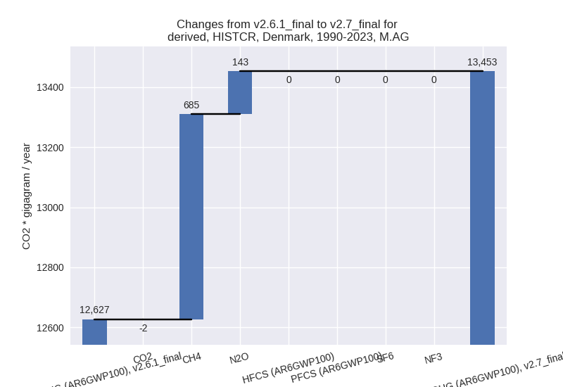
The changes come from the following subsectors:
- 3.A: Total sectoral emissions in 2022 are 8180.09
Gg CO2 / year which is 66.0% of category M.AG emissions. 2023 Emissions
have changed by 0.4% (29.59 Gg CO2 /
year). 1990-2023 Emissions have changed by 8.6% (683.54 Gg CO2 / year). For 1990-2023
the changes per gas
are:
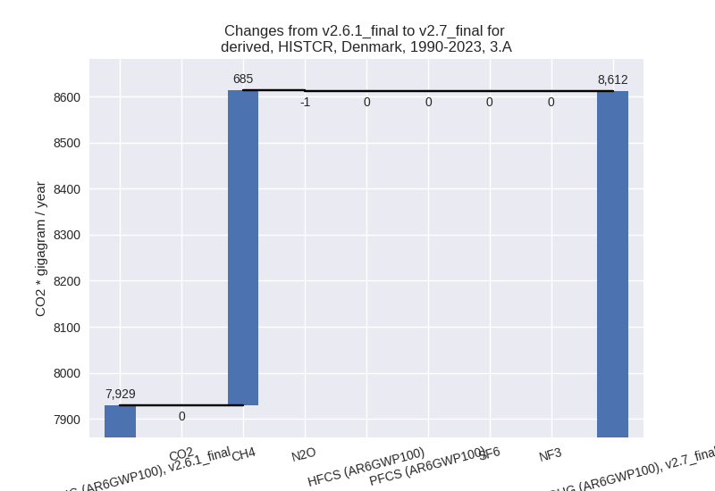
There is no subsector information available in PRIMAP-hist.
- M.AG.ELV: Total sectoral emissions in 2022 are
4216.89 Gg CO2 / year which is 34.0% of category M.AG emissions. 2023
Emissions have changed by -5.4%
(-216.38 Gg CO2 / year). 1990-2023 Emissions have changed by 3.0% (142.35 Gg CO2 / year). For 2023 the
changes per gas
are:
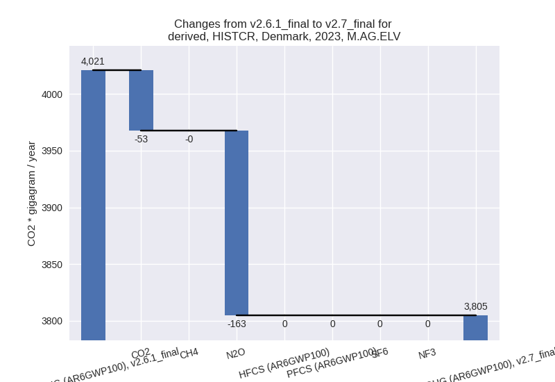
For 1990-2023 the changes per gas
are:
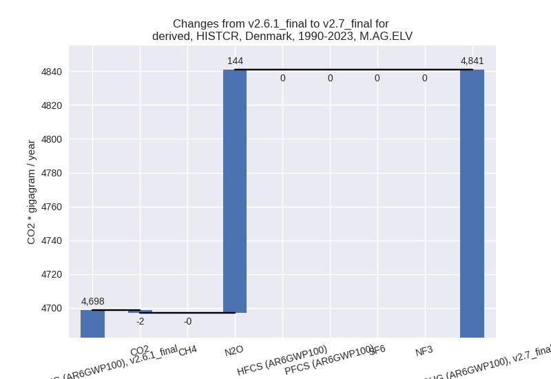
There is no subsector information available in PRIMAP-hist.
- 4: Total sectoral emissions in 2022 are 1232.72 Gg
CO2 / year which is 2.9% of M.0.EL emissions. 2023 Emissions have
changed by 0.8% (10.56 Gg CO2 /
year). 1990-2023 Emissions have changed by 1.9% (24.76 Gg CO2 / year).
- 5: Total sectoral emissions in 2022 are 92.29 Gg
CO2 / year which is 0.2% of M.0.EL emissions. 2023 Emissions have
changed by inf% (86.67 Gg CO2 /
year). 1990-2023 Emissions have changed by inf% (201.66 Gg CO2 / year). For 2023 the
changes per gas
are:
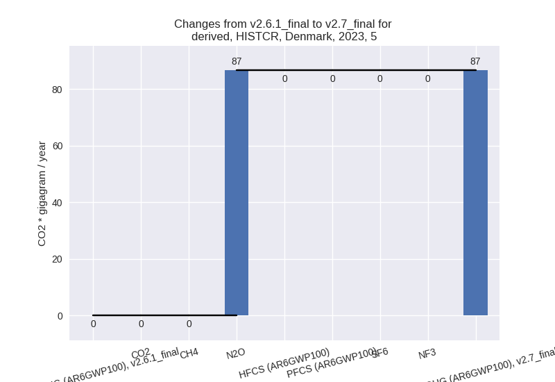
For 1990-2023 the changes per gas
are:
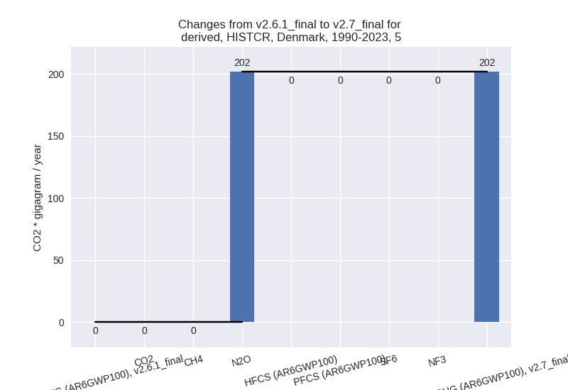
third party scenario (HISTTP):
Most important changes
per time frame
For 2023 the following sector-gas combinations have
the highest absolute impact on national total KyotoGHG (AR6GWP100)
emissions in 2023 (top 5):
- 1: 1.A, CO2 with -2988.99 Gg CO2 / year (-11.7%)
- 2: 2, N2O with 43.07 Gg CO2 / year (60.6%)
- 3: 2, CH4 with -0.19 Gg CO2 / year (-6.3%)
- 4: 2, CO2 with 0.04 Gg CO2 / year (0.0%)
- 5: 1.A, CH4 with 0.00 Gg CO2 / year (0.0%)
For 1990-2023 the following sector-gas combinations
have the highest absolute impact on national total KyotoGHG (AR6GWP100)
emissions in 1990-2023 (top 5):
- 1: 1.A, CO2 with -279.21 Gg CO2 / year (-0.6%)
- 2: 2, N2O with 4.38 Gg CO2 / year (1.0%)
- 3: 2, CH4 with -0.01 Gg CO2 / year (-0.2%)
- 4: 2, CO2 with 0.00 Gg CO2 / year (0.0%)
- 5: 1.A, CH4 with 0.00 Gg CO2 / year (0.0%)
Changes in the main sectors for aggregate KyotoGHG (AR6GWP100)
are
- 1: Total sectoral emissions in 2022 are 24254.40 Gg
CO2 / year which is 61.2% of M.0.EL emissions. 2023 Emissions have
changed by -11.1% (-2988.99 Gg CO2 /
year). 1990-2023 Emissions have changed by -0.6% (-279.21 Gg CO2 / year). For 2023
the changes per gas
are:
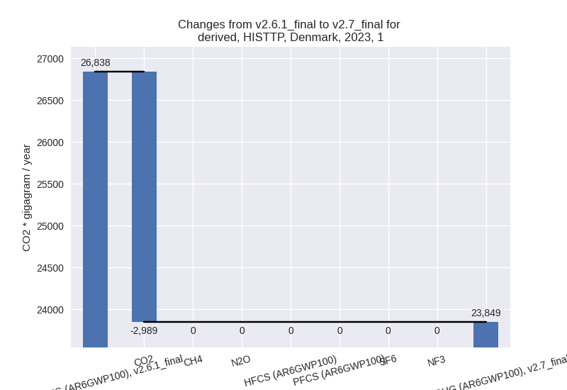
The changes come from the following subsectors:
- 1.A: Total sectoral emissions in 2022 are 23726.42
Gg CO2 / year which is 97.8% of category 1 emissions. 2023 Emissions
have changed by -11.4% (-2988.99 Gg
CO2 / year). 1990-2023 Emissions have changed by -0.6% (-279.21 Gg CO2 / year). For 2023
the changes per gas
are:
There is no subsector information available in PRIMAP-hist.
- 1.B.1: Total sectoral emissions in 2022 are 0.00 Gg
CO2 / year which is 0.0% of category 1 emissions. 2023 Emissions have
changed by 0.0% (0.00 Gg CO2 /
year). 1990-2023 Emissions have changed by 0.0% (0.00 Gg CO2 / year).
- 1.B.2: Total sectoral emissions in 2022 are 527.97
Gg CO2 / year which is 2.2% of category 1 emissions. 2023 Emissions have
changed by 0.0% (0.00 Gg CO2 /
year). 1990-2023 Emissions have changed by 0.0% (0.00 Gg CO2 / year).
- 2: Total sectoral emissions in 2022 are 1716.74 Gg
CO2 / year which is 4.3% of M.0.EL emissions. 2023 Emissions have
changed by 2.6% (42.92 Gg CO2 /
year). 1990-2023 Emissions have changed by 0.2% (4.38 Gg CO2 / year). For 2023 the
changes per gas
are:
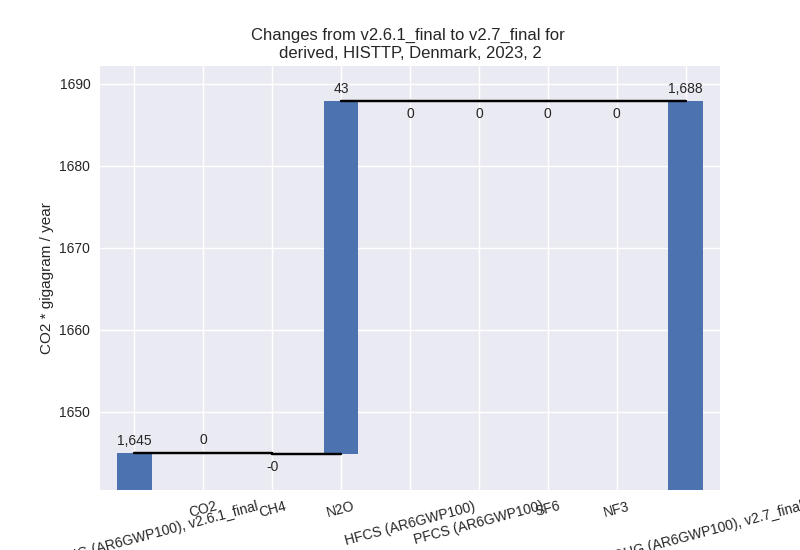
- M.AG: Total sectoral emissions in 2022 are 10493.59
Gg CO2 / year which is 26.5% of M.0.EL emissions. 2023 Emissions have
changed by 0.0% (0.00 Gg CO2 /
year). 1990-2023 Emissions have changed by 0.0% (0.00 Gg CO2 / year).
- 4: Total sectoral emissions in 2022 are 3106.30 Gg
CO2 / year which is 7.8% of M.0.EL emissions. 2023 Emissions have
changed by 0.0% (0.00 Gg CO2 /
year). 1990-2023 Emissions have changed by 0.0% (0.00 Gg CO2 / year).
- 5: Total sectoral emissions in 2022 are 92.29 Gg
CO2 / year which is 0.2% of M.0.EL emissions. 2023 Emissions have
changed by 0.0% (0.00 Gg CO2 /
year). 1990-2023 Emissions have changed by 0.0% (0.00 Gg CO2 / year).